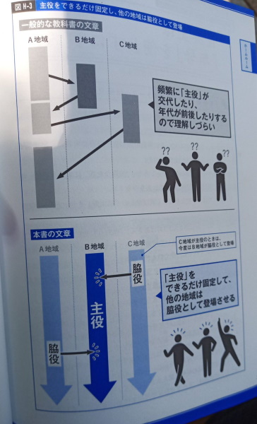
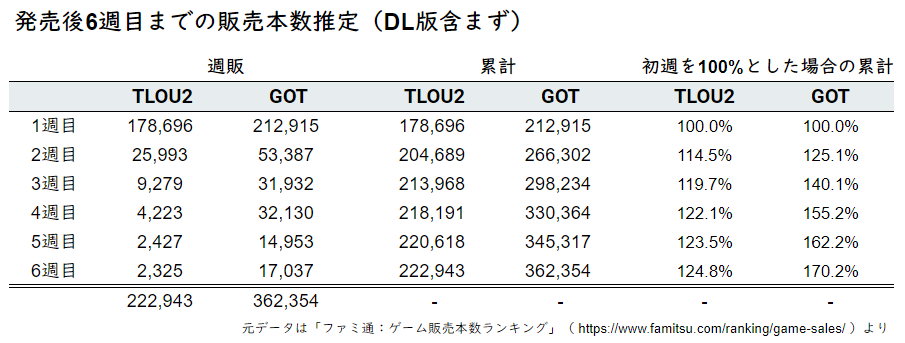

【良かった点】
演技を落とし込んだアニメーション
これは Naughty Dog 印といってよいだろう。 世界最高峰のグラフィックスであり、群を抜いている。 トップスタジオの矜持といえる。
アニメーションでいえば、とくにカットシーンでアップになるキャラクターの表情は前作を超えて凄まじいクオリティになっている。 こんなレベルの作り込みは Naughty Dog でなければやらないだろう。
アクセシビリティへの対応
Naughty Dog は「アンチャーテッド 海賊王と最後の秘宝」（2016年）から、片手操作対応など、アクセリビリティに多大な配慮をするようになっていた。 今作では、それが期待を遥かに超えるほど進化しており、この点に関しては称賛以外の言葉はない。
PS4のキャッチコピーである「できないことができるって、最高だ。」を綺麗事ではなく実際の作品に落とし込んだことも、 ゲーム業界全体に好影響を与えると期待できる。
【悪かった点】
わかりにくいストーリーテリング
前作「The Last of Us」を様々な“ゾンビアポカリプスもの”と峻別していたのはストーリーの伝え方の部分だと私は考えている。 約1年間の旅の最後にジョエルがエリーを助けてしまったことをプレイヤーに納得させるだけのゲームとなっていた。 物資が乏しく誰もが生き残るために非情にならざるをえない世界で、その象徴的存在であるジョエルが最後に親の情を見せてしまう物語だということを、プレイした人なら誰もが理解できたはずだ。
それはつまるところ、ストーリーそのものではなくストーリーを伝える手法こそが白眉であったことを示している。 操作ができなくなるカットシーンを極力使わず、ほとんどのお話を操作可能なゲームプレイ中に進行させるという、ゲームだからこそできたストーリーテリングが素晴らしかった。 プレイヤーキャラを固定し、場面転換を挟まず“長回し”的に描く、“プレイする映画”としての完成度が高かった。 主人公たちに何が起きて、登場人物たちが何を感じたのかがとてもよく伝わってきた。 だからこそ、世界設定的にはありきたりな“ゾンビアポカリプスもの”でありながら、ゲーム史に残る大傑作となったのだ。
一方で、今作はプレイヤーキャラの交代を早い段階から行い、しかも何度も繰り返す。 前作に比べて長回し演出は少なくなっているだけでなく、操作不可能で見るだけのカットシーンも多い。 さらに回想シーン（回想シーンがゲームパートになっている部分もある）が何度も挟まれ、エリーに至っては心境を日記で表現してしまっている。 これはわかりにくいストーリー構成である。
前作のラストシーンについて、「ジョエルが最後に親の情を見せてエリーを助けてしまった」とわかりやすく説明できるのに対して、 今作のクライマックスでは「なぜエリーはあの選択をしたのか」がほぼ伝わってこず、こちらでいろいろと補って解釈してあげないといけなかった。 この点では FF15 のぶっ飛びストーリーと同レベルになってしまっている。 発売数日でディレクターの ニール・ドラックマン と共同脚本家の ハレー・グロス がインタビューでネタバラシをしたのは滑稽だった。
新「ゴッド・オブ・ウォー」（2018年）が、前作「The Last of Us」の長回し演出を遥かに超える「オープニングからエンディングまで全編ワンカット」という前代未聞のゲームを作ってしまったので、 ニール・ドラックマン としても「今更前作のように作っても……」という感覚があったのかもしれない。 しかし、プレイヤーキャラを何度も交代させ、回想シーンを連続して時系列をぐちゃぐちゃにしてしまったのは、 “プレイする映画”と表現されるタイプのゲームにおいて失敗だったとしか思えない。
いや、「“プレイする映画”と表現されるタイプのゲームにおいて失敗」と書いたのは主語が大きすぎる。 他作品「デトロイト：ビカムヒューマン」（2018年）も同じようにプレイヤーキャラを何度も入れ替えるし、回想シーンも入る。 ただ、こちらはストーリー全体が群像劇として構成されている。 最終的に運命が交錯するという展開が少しずつ見えてくるため、わかりやすくなっている。 それに時系列は行ったり来たりを繰り返さなかった。
前作のDLC「Left Behind」でも時系列の入れ替えは行われていたが、 こちらは本編という明確な“柱”が存在している中での外伝的扱いであったため、内容理解の問題にはならなかった。 それと比べると、今作は“柱”となるもの自体がぐちゃぐちゃになってしまっている。
兎にも角にも、今作のプレイヤーキャラの度重なる交代や回想シーンの連続は、 ストーリーをわかりにくくする効果しかなかったというのが私の印象だ。 それらが何度も繰り返されるので言い訳がましく説明されている気分にさえなった。
この問題はストーリーだけにとどまらない。 ゲームプレイの飽きやすさという形でも影を落としてしまっている。 前作の何が評価されたのか作り手自身がわかっていなかったのか、 わかった上であえて逆張りをしたのかは不明だが、 前作ファンとして一番残念に感じた部分である。
参考

「一度読んだら絶対に忘れない世界史の教科書」（2018年）より
図の上側の「一般的な教科書の文章」が「The Last of Us: Part2」で、下側の「本書の文章」が「The Last of Us」であることは理解いただけるだろう。 “一般的な教科書”は“教科書”として様々なテーマを過不足なく記述するという役割があるから上側のスタイルになっている。 一方で「一度読んだら絶対に忘れない世界史の教科書」は、テーマを「地域の支配者体制の移り変わり」に絞ることによって主役を固定し、いわば“列伝”スタイルにしている。
創作において、“一般的な教科書”のように、主役の交代や時系列の入れ替えを行うこと自体は効果的に使われれば面白い要素である。 しかし、群像劇でもなければ謎を解き明かすミステリーでもない Part2 でその手法が効果的だったとは思えない。
超展開するストーリー
「わかりにくいストーリーテリング」に関しては追加で述べたいことがある。 展開の強引さだ。 この部分はネタバレをせずに記述するのは難しいが、なるべくネタバレを避けながら具体的に触れてみたい。
前作の主人公ジョエルの弟であるトミーを例に取る。 このキャラは序盤に復讐に向かおうとするエリーを諌めるが、結局、自身が率先して復讐に向かう。 そしてノリノリで暴れまわるも突如として「この辺にしといたるわ」「お土産もゲットしたし」といった塩梅でルンルン気分で復讐を道半ばで終えようとする。 しかし、終盤で場面が変わると「今までのノリは何だったのか？」というレベルで復讐に取り憑かれた鬼となってしまう。
この終盤の豹変に理由を付けることはできる。 まず、時間が豹変前後で1年以上経過している。 その間に考えが変わるということは十分に考えられるだろう。 他にも豹変の理由を想像することはできる。 それこそ可能性は無限大だ。 問題はプレイヤーにとって終盤の場面転換は一瞬の出来事であり、十分な時間が経過しているわけでもなければ、トミーの身に起きた変化がしっかり表現されているわけでもないところにある。 また、そもそも論を言えば、プレイヤーはあの場面でトミーが登場することに驚き混乱するようになっており、豹変以前の問題ともいえる。
FF15 の後半で、ルナフレーナ の死を引きずる ノクティス に グラディオラス がキレたり イグニス の突然の失明が発覚して、わけがわからなくなるのと同じなのである。 ちゃんと描いていないのだからプレイヤーがストーリー展開についていけないのは当然なのだ。
このように、お互いに気持ちを高めることなく前戯もなく突然始まる性行為のような超展開がそこかしこにある。 繰り返しになるが、どんな形であれ解釈し説明することはできる。 FF15 も解釈自体はできた。 問題はそれがちゃんと表現されているかどうか、表現せず省略する場合は省略しても大丈夫な一貫性のある展開なのかどうかである。 そのどちらでもないから、超展開になってしまいプレイヤーはついていけなくなってしまうのだ。
「予想を裏切る」という言葉はストーリー展開の褒め言葉だが、今作はキャラクターの雑な死に方も含め「単に唐突なだけ」という展開が多い。 これも作品がわかりにくくなってしまっている要因となっている。
食い合わせの悪いテーマ、描かれないジョエルの“業”
この作品には2つのテーマがあるだろう。 「復讐（の連鎖）」と「許し、あるいは親離れ」である。 物語の核心部分のネタバレになってしまうので、ぼかして書くが、この2つの根幹にあるのは前作のラストでジョエルがエリーを助けたという“業”である。
まず、このジョエルの“業”の帰結が今作でちゃんと描かれていないためにテーマそのものの納得感が薄くなっている。 感染者はちょっと危険な動物ぐらいのカジュアルな存在となってしまっており、 唯一の免疫持ちであるエリーの存在は、ただの少女になってしまっている。 人類よりもエリーを選んだという前作のジョエルの判断が「間違っていた」とはまったく思えない続編世界なのである。 正直なところ、「The Last of Us」の続編である必然性すらなくなってしまっている。
また、そもそも論でいえば、ラスアスは“正義”が失われた非情な世界の話なのだ。 この世界でことさら“罪”を取り上げ、「復讐」をテーマにしたことの意味は薄い。 人の生死は「お互い様」の一言で片付けられる世界だったはずだ。 前作で黒人兄弟のヘンリーとサムがジョエルを見捨てるシーンがあるが、その後、再び共闘していたではないか。 あれこそラスアスの世界観を表現するシーンだったはずだ。
このように、今作のテーマはラスアスの世界観に対する信頼感を失わせてしまうものになっている。 有り体にいえば“ノレない”のだ。 さらに問題なのは「復讐」と「許し、あるいは親離れ」の両方に中途半端にフォーカスしてしまった部分にある。
もし「復讐」にフォーカスするのであれば、 「復讐」に至る経緯をもっと描いて「復讐」の正当性や苦労を表現する必要があっただろう。 これがないので登場人物たちが感染者や野盗のいるアメリカを何千kmもカジュアルに移動し、 邪魔するものを当たり前のように殺していく旅になってしまっている。 そのため“切実”なはずなのにやっていることが軽く見えてしまう。
一方で「許し、あるいは親離れ」にフォーカスするのであれば、 前作と同様にジョエルとエリーの物語を中心に描くべきだった。 露骨なファンサービスのように挿入された“博物館”のシーンは描く必要がなかった。 徹底してジョエルとエリーの決裂を表現し、その後の和解につなげなければいけなかっただろう。 そうなっていないので、終盤に明かされるジョエルの告白は唐突であるし、エンディングシーンにカタルシスがない。
2つあるテーマのどちらかを“主”、もう一方を“従”の関係にするよう明らかな差をつけるべきだったと思う。
この2つのテーマを並列させてしまったせいで、食い合わせが悪くなってしまっている。 どちらのテーマも、互いに足を引っ張り合うため、過剰でもあるし不十分でもあるというどっちつかずな状態なのである。 結果として、どっちにも“ノレない”。
そうした中途半端な構造の中で、「復讐」と「許し、あるいは親離れ」を同時並列して描くための工夫が、 ジョエルとエリー、そして新キャラのアビーの三者をこれでもかと対比させたことであったのではないか。 詳しくは書かないが、今作の後半パートが露骨に前作のオマージュになっているのは、誰の目にも明らかだろう。
しかし、この工夫の結果は散々だった。 登場人物たちは対比構造にあてはまるように歪まされ、 脇役たちは不要になったら雑に退場させられ、 超展開が連続するようになってしまった。
なんとなく罪滅ぼしのために子供を助けて仲間なんて最初からいなかったかのごとく裏切るアビー、 モブキャラの死などには目もくれないのに突然罪悪感や慈悲に目覚めるエリー、 唐突に挟まる回想シーンで仄めかされるその真意、 「なんじゃこりゃ……」と思わざるを得ない。 一貫性がないのが人間だと嘯くのは結構だが、一貫性のなさが目立ちすぎて、もはや不自然である。
それだけではない。 今作の後半パートはほとんどが前半パートとは関係のない寄り道になっている。 先ほど説明したとおりジョエル・エリー・アビーの三者の対比関係を作るためだけに存在しているのだろうが、 もっと前半パートとストーリー的に関連するようにできなかったのだろうか。
前作は「ジョエルが最後に親の情を見せてエリーを助けてしまった」と一言で表現できるが、そこに至るまでがちゃんと描かれていた。 プレイした人には、この一言に万感の思いを感じるだろう。 オープニングとエンディングの一部のシーンは美しく対比されていた。
一方、今作は、奇をてらったのか前作の逆をあえて行ったのか、とにかく残念としか言いようがない。 「玄関開けたら5秒で……」みたいな超展開や強引な対比はやめていただきたかった。
やらされている感：ゲームプレイと全体の乖離
ここまでストーリー面での話を書いて来たが、 まとめてみると「一本道なのにやらされている感がない」ゲームだった前作と比較して、 今作は「やらされている感しかないし、脚本の都合が目立つ」と言い換えることもできる。
上記の“やらされている感”はストーリーだけの話ではない。 ゲームプレイからも感じられてしまう。
前作は約1年を通してアメリカを横断する旅であった。 季節の変化とロケーションの変化がマッチし、違和感なく場面展開していったので、バラエティが感じられた。 今作もよくよく考えると季節の変化とロケーションの変化は前作並みに多様である。
しかし、どうしても同じパターンの繰り返し、すなわち変化の無さを感じてしまう。 バラエティが感じられないからこそ“やらされている感”や“作業感”が出てしまう。
バラエティが感じられない原因は、【悪かった点】の最初で述べたプレイヤーキャラの度重なる交代や回想シーンの連続という構成のせいである。 実際には季節やロケーションは変化しているのに、繰り返されるキャラ交代や時系列の反復横跳びばかり目立ってしまうため、 季節やロケーションの変化が相対的に感じられなくなってしまっている。
キャラや時系列の切り替えを連発するということは、 肝心のストーリー自体がなかなか前に進まない構成でもあるわけだが、 進んでいない中で同じことを繰り返したら飽きるに決まっている。 お話が進んでいないからこそ“変化”ではなく“繰り返し”として認識されてしまうのだ。
また、今作のステージは“ワイドリニア”が多めになっており、マップが広くなっている分、敵も増えており、物資や遺物集めのための移動距離も長くなっている。 これも繰り返しが多く感じられ、“作業感”が増している理由だろう。
とにもかくにも「またこのパターンか」とか「まだ終わらないのか」などと感じながらプレイしていた。 良いゲームというのは「もうそろそろ終わりそうだな、まだ終わらせたくないな」と思わせてくれるものだが、 今作は途中から「いつ終わるの？」「まだやるの？」としか思わなくなってしまった。
さらに、今作は前作と異なり、ゲームプレイ中よりもむしろ操作不可なカットシーン中に物語が展開するので 「ゲームプレイはゲームプレイ、カットシーンはカットシーン」というように分離してしまっているのも問題だ。
テーマとの乖離についても言及すると、“罪”を認識させる作りでありながら、 成長要素やクラフト要素といったゲームプレイ部分を楽しむには道中のモブキャラを無慈悲に倒していかなければならない。 そのための割り切りが必要になるのも“やらされている感”が増してしまう原因となっている。
これらのゲームプレイと全体（とくにストーリー）との乖離は、ゲームならではの“没入感”を減らしてしまっている。 せっかくの匍匐前進や足撃ちなどのアクションの進化や高度なアニメーションも、これでは宝の持ち腐れである。
つい最近までストーリー性のあるゲームといえば「ゲームパートのご褒美としてのプリレンダムービー」という分離形式が主流だった。 過剰な物言いになるが、ラスアスの最新作がその時代にまで退化してしまったのは残念である。
プロモーションの裏切り
ラスアスをずっと追いかけてきたファンなら、事前情報では新キャラのアビーは存在が覆い隠され、 今作がジョエルとエリーの旅であることを期待させ続ける“嘘”が繰り返されてきたことを知っている。 なにせ、2019年に行われたメディア向けのデモプレイでも、エリーの復讐の旅にジョエルが加わるという見せ方をしていたぐらいだ。 以下は2019年9月27日にファミ通サイトに掲載されたデモプレイの感想記事からの引用である。
やっとつぎの場面だ……と思ったとたん、エリーが背後から口を覆われてしまう。 「また敵か⁉」と思ったのだが、その正体はジョエルだった。 ジョエルと出会えた喜びをかみしめていると、エリーから「なんでここにいんの？」という問いが。 それに対し、ジョエルが「お前をひとりで行かせるわけないだろ」と答え、“郊外”は終了した。
上記のシーンは実際のゲームには存在しない。これだけではない。 発売直前に公開されたストーリートレーラーでは、 ゲーム内では回想シーンで描かれる若めのジョエルが老いたジョエルに変更されているし、 エリーの復讐が一人旅に見えるように同行者の存在が消されている。 事前情報を追っていたら「エリーの復讐の旅にジョエルが駆けつけるんだろうな」と思うのが自然である。
また、大手メディアの事前レビューでは新キャラのアビーに触れていたメディアがほとんどない。 SIE が事前レビューの条件として、厳しい情報統制を行っていたことを、事前レビューを行った海外 Youtuber が明かしていた。 つまり、最初から騙すつもりで情報統制していたのである。
このように、広告目的のトレーラーだけでなく、本来中立であるはずのメディアレビューまで操作して、 あらゆる方法で、今作が前作同様ジョエルとエリーの旅であることを印象づけようとしていたのである。
ここまでして徹底的にファンを騙してたのかと、私はプレイ後に憤慨してしまった。 今は SNS でファンが作品を盛り上げる時代なのだ。 それを利用するだけ利用したところで裏切るというのは悪意がありすぎる。 実際にファンに反発されて炎上したのは自業自得としかいえない。 発売直前にゲーム内容がリークされてしまったとき、 多くのファンは Naughty Dog に協力してリークに対して“見ざる・聞かざる・言わざる”を実践したのだ。 しかし、その結果がこれでは……。
このような行為をされてしまうと、今後どのような気持ちで好きな作品を応援すればいいのかわからなくなってしまう。 ファンに媚びても良い作品は作れないというのは理解できるが、裏切る必要はないのだ。 「期待に応え、予想を裏切る」とは劇作家の三谷幸喜の言葉とされているが、爪の垢を煎じて飲んでもらいたいものだ。
過剰な政治性
“ポリコレ”的文脈については、アンチSJW によって荒らされている部分であり、正直触れたくはないが、全く触れないのもフェイクだと思う。
今作にそうした要素は確かにあり、はっきりいってクドい。 前作にもビルのような性的マイノリティはいたし、リーダーシップを発揮する女性としてテスやマーリーン、マリアがいた。 それ以上でもそれ以下でもなく、当たり前のこととして存在していた。
一方で、今作はかなりアグレッシブである。 量が多いという意味ではない。 すごく攻撃的なのだ。 あまりにもアグレッシブなので「白人男性的父性という概念を破壊するためのストーリー」という悪意ある発言を見聞きしたときに、 「そうかもしれない」と思ってしまったほどである。
「フェミニズム的なキャラクターが登場する」とか「LGBTに配慮している」というレベルではなく、 そういうシーンを入れるのが目的化しているように思えて、もはや“アクティビズム”のように感じてしまう。
エリーは大衆の前で“性的”なキスをして注意されても悪びれないし、 エリーの擁護に回ったジョエルに対して「お前に助けられる筋合いはない」という尊大な態度を取り、 翌日に謝罪してきたオジさんに対しても悪態をつく。 新キャラであるアビーは初出のトレーラーよりも筋肉が肥大しており、物資が乏しい世界観をあやふやにする。 アビーは自己実現のためには何でもする人物として描かれている。 良くいえば誰にも媚びない、悪くいえば自分勝手な存在である。 また、貴重な外科医であり妊婦のメルが前線に出ることに仲間の誰も疑問を抱かない……などなど。
言い換えれば、自由に好き勝手やることが“強さ”や“正しさ”だと作り手が心底信じているのではないかと感じられてしまうほど“責任感”のようなものが欠けている。
「“責任感”がないのではなく、むしろそうした“社会性”に抑圧され、弱者であることを強制されてきたものたちの解放が表現されている」と言われればそうかもしれないが、 アグレッシブすぎる進歩主義に見えてしまう。 今作においてはノイズとしか思えなかった。
前作のジョエルは、最後の最後に親のエゴを押し通したからこそ、その“業”が痛いほど伝わった。 一方で、今作はほぼ全員が常に自分最優先で暴走するので、そうした“痛み”が感じられなかった。 「勝手にやって、どうぞ」と、ゲームから気持ちが離れてしまい、 ゲームプレイそのものがボタンを押す作業に変わってしまった。
【まとめ】
マルチプレイなし
事前情報でマルチプレイは実装されないことは明かされていたので、これに触れる必要はないのかもしれないが、 長く遊べる作品かどうかという点では大きなマイナスポイントになってはいる。 総評の前に「マルチプレイがない」という事実だけは触れておく。
総評：前作の美しさを失ってしまったイビツな作品
様々なサイトで行われた2010年代のベストゲームを決める投票で、 “オープンワールド”の代表作である「ゼルダの伝説 ブレス オブ ザ ワイルド」（2017年）と、 それとは対局の性質を持つ“一本道”の代表作「The Last of Us」（2013年）が人気を二分した。 前作は“一本道”ゲームとして美しくまとめ上げられた、 ゲームだからこそできたストーリーテリングを体現した、まさに極まった「工芸品」といえる傑作であった。 「2010年代のベストゲーム」に選ばれるだけの理由があったのだ。
しかし、今作では前作の珠玉のような美しさは失われている。 とにかくデコボコしている。 【悪かった点】で述べたとおり、足りない部分と過剰な部分が目立つイビツな作品になってしまっているのだ。 加えて、アクションは進化しているのに「ゲームパートのご褒美としてのプリレンダムービー」時代のゲームに退化してしまっている。
さらに残念なことに、今作の“わかりにくさ”を以って、わからなかった人を批判する向きもある。 わからなかった人を批判する人たちが今作を「映画的（文学的、知的、などなど）」と表現するのをよく見かける。 「わかりにくいのが映画的であり、わかりにくいからこそ高尚」というのは、確かに一般的にはそういう側面はある。 しかし、今作に関していえば、そのような主張をすることはただの権威主義的態度であり欺瞞であろう。 ゲームとしてチグハグだったからこそわかりにくく、テーマを絞らなかったがために中途半端な作品になっただけだ。
だからこそ、前作のゲーム作品としての“美しさ”を評価していた人は、今作の出来に怒りすら覚えるのではないかと思う。 逆にいえば、前作が絶妙なバランスの上に成り立っていたことを再認識することになるだろう。
繰り返しになるが、突飛な世界設定や尖ったゲーム性ではなく、ゲーム全体の調和こそが前作を唯一無二の存在にしたと私は考えている。 “ゾンビアポカリプス”“擬似親子”“ステルスシューター”といった、 よくある素材を上手に組み合わせたからこその傑作だったのだ。
そうした私の立場だと、その“美しさ”を失ってしまった今作はありきたりな“ゾンビアポカリプスもの”のひとつでしかない。 続編は野暮だと思いながらも期待はしていたので、“満足度”や“熱中度”といったものは非常に低くなってしまった。 また、SNS などで積極的に応援していただけに「プロモーションの裏切り」も落胆につながった。
とはいえ、今作を完全にニュートラルに判断した場合、海外トップスタジオのAAA作品という贅沢すぎるグラフィックスといった見栄えの良さや、 海外連続ドラマ的な“外連味”はあるので、そうしたものを求めている人にはそれなりの作品にはなっているといえる。
【後記】
「なんで続編でこんなことやっちゃったんだろう？」と思う。 ディレクターの ニール・ドラックマン に至っては「嫌われても構わない」みたいなことを言ってしまっている。 やはり エイミー・ヘニング や ブルース・ストレイリー といった重鎮がいなくなったことが大きいのではないか。
今作のプロットは ニール・ドラックマン が大学生時代から温めていた内容で、 これまで何度も企画から先に進まなかった“復讐譚”に原型がある。 ファンなら、前作のテスが当初は敵役として登場する予定だったことを見聞きしたことがあるかもしれない。 このあたりの話は 海外の Youtuber がまとめている。
Naughty Dog に残り、スタジオの顔として副代表にまで上り詰めた ニール・ドラックマン だが、 彼に意見できる人間はもういなかったのだろう。 それゆえに、バランスが崩れたものが崩れたまま世に出てしまったということだろう。
ところで Naughty Dog はとてつもないクオリティのゲームを作る代償として、非常にブラックな労働環境であるため、人の出入りが激しいことは度々報じられている。 BioWare から Naughty Dog に移り、今作の発売前に退社した ジョナサン・クーパー は実際の現場について触れている。 興味がある方は目を通すと良いだろう。 「A more senior team would have shipped TLOU2 a year ago（もっと熟練したチームだったなら、 TLOU2 は一年前に発売されていただろう）」には重みがある。
部外者が周辺情報からあれこれいうのは野暮なのでこの辺にしておく。 最後にファミ通の「ゲーム販売本数ランキング」で締めたい。

6週目までで初週から 25% しか販売本数を増やせていないという事実が今作の性質を表していると思う。 このゲームがやりたかったことは“出落ち”でしかないので、 繰り返し鑑賞に耐えられず、一度“観れば”十分になってしまっている。 ストーリー上に存在するいくつかの衝撃ポイントも、 情報として知っていれば十分なものであるため、 実際にプレイして体験する必要性すらなくなってしまっている。
なんというか「Ar yaH.. ARE YOU OUTTA YOUR MIND!?!?」である。 今年の GOTY は火に油を注がないように「Fall Guys」に全てかっさらってもらいたい。